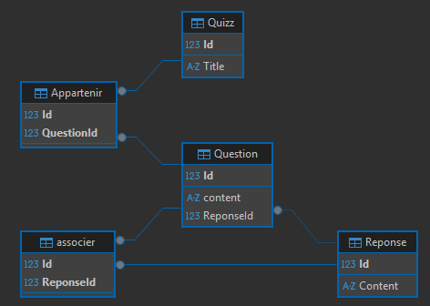
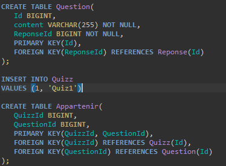

Base de Données Relationnelle - Plateforme de Quiz
Ce projet, effectué dans le cadre de ma formation, consiste à créer une base de données pour un site proposant plusieurs quiz. J'ai organisé les données dans plusieurs tables liées par des clés étrangères, afin de pouvoir gérer et afficher correctement chaque quiz avec ses questions et ses réponses.
1. Conception et Modélisation (MCD)
Avant toute implémentation, j'ai réalisé le MCD (Modèle Conceptuel de Données). Cette étape a été essentielle pour définir les entités (Quiz, Question, Réponse) et leurs relations. Cela garantit la cohérence des données et permet une gestion dynamique des différents quiz.
 Modèle Conceptuel de Données (MCD)
Modèle Conceptuel de Données (MCD)
2. Environnement Docker & DBeaver
Pour l'hébergement, j'ai déployé un conteneur SQL Server via Docker Desktop. Pour administrer cette base, j'ai utilisé DBeaver, ce qui m'a permis de visualiser le schéma relationnel et de vérifier la bonne liaison entre les tables via les clés étrangères.

Vue relationnelle des tables sous DBeaver3. Implémentation et Scripts SQL
J'ai rédigé des scripts SQL complets pour automatiser la création de la structure (DDL) et l'insertion des données de test (DML). Ces scripts incluent la création des tables, la définition des types de données et la mise en place de l'intégrité référentielle.

Extrait des scripts de création et d'insertion SQL